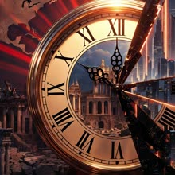

The Alternate Effect
@THEALTERNATEEFFECT
One decision. One different world. Pick a side in every timeline.
Follow on InstagramChoose a timeline
Deep past → todayPick a side
If the Ming kept its Treasure Fleet sailing after 1433, who reaches the Americas first?
- A The Ming Dynasty, across the Pacific
- B Western Europe, as it really happened
- C Both at once, with early Pacific trade
Answers live in the comments on the episode.
New timelines every week
Every episode ends with a choice. Watch, then comment your side.